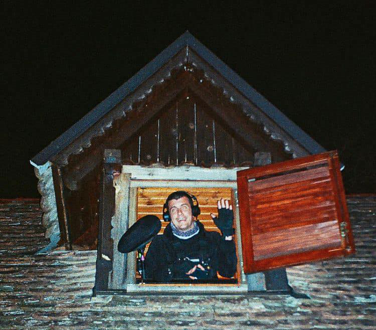
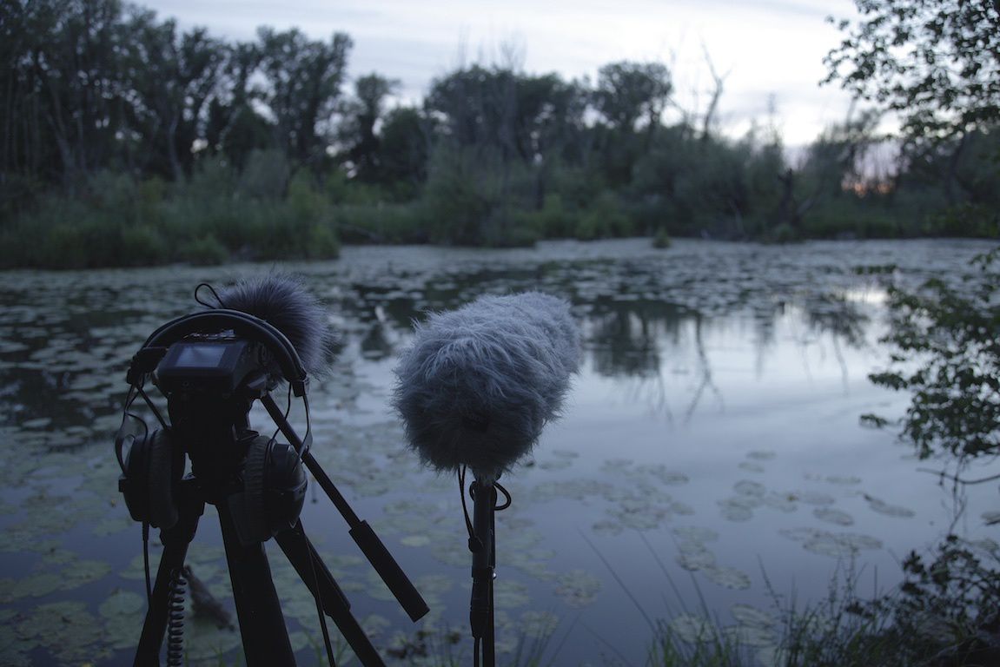
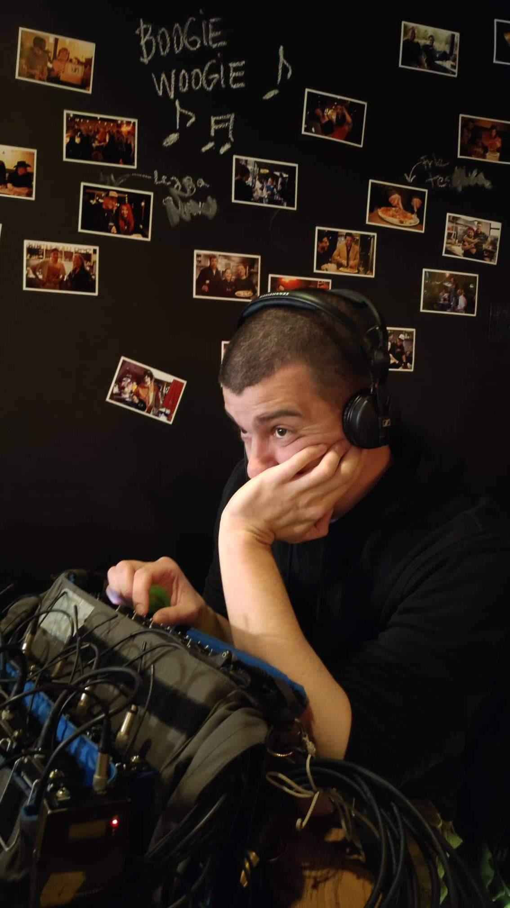
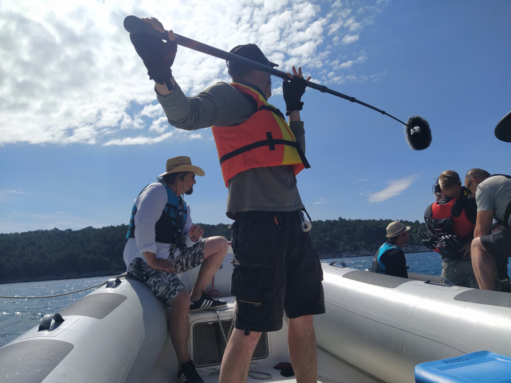
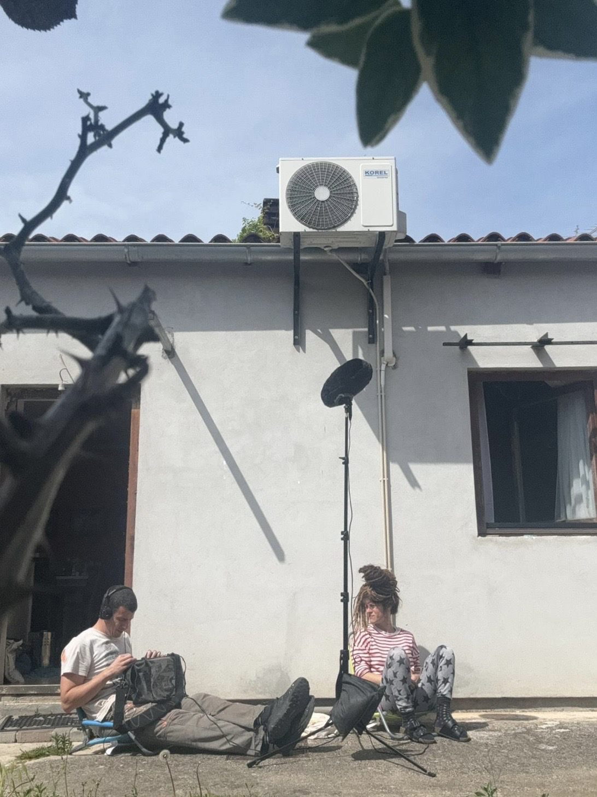

About
05.02.2026

My name is Daniel Žuvela. I was born in Rijeka, Croatia, on September 25.1983., which makes me 42 years old at the moment of writing this post. Most of my life I lived in a small town called Kraljevica. I am currently residing in Pula, with my partner Petra. For the last ten years I have been working as a boom operator(main source of income), sound mixer, field sound recordist and occasionally as a sound designer. After a 10 year long hiatus, this website is under construction for the second time. This time I will make something more with it. At least I hope I will.

The first version of this website came out in 2014. as a practical part of my major project at my studies of audio engineering in Ljubljana. I was trying to see if there is a possibility for a no name like me to make a small website that would offer free sound effects. Since I didn't know anything about web development, Rebeka Posavec took on the role of the developer and designer. I recorded and edited the sounds, she made everything else. I'm not sure how I would measure the success of that version of the website, but I can say that I got my audio engineering diploma thanks to it and that some people downloaded the sounds and used them in their projects. I had big plans for the website. After the first update with fresh sounds I started working in the industry and my big plans slowly faded away since I had time for nothing except work.

Ten years later it was time to stop talking about putting the website back together and start working on it. I decided I was going to do everything myself. I needed to learn a bunch of new things I knew nothing about, so It was going to take me a while. What do I want this site to be? I want this site to be my resume, I want to tell you little stories about my life and the people and places that surround me and I want to give you free sound effects you can use in your projects. Why am I doing this? Because I want to continue working with sound, collaborate on different projects and meet new people. Does this make sense in the age of social media and AI? I haven't got a clue but this is something I want to do. Are the sound effects going to be free? Yes, without tricks, scams, lower quality versions or any nonsense you come across on websites that offer “free” stuff. You will be able to contribute, but only if you choose to do so. If the process of recording a certain sound library proves to be expensive, that sound library will have to be paid for. But in the end if I earn enough to cover my expenses for that sound library it will also become free. That's the main idea.

So here we are. This is, in a way, a product of eleven years of my life. I will continue working on this while I can. For some period I will be able to update the site regularly. After that, who knows. I still need to work and earn money. I like recording sound and I like learning, so the site should have a relatively stable life from this point on. For how long, I don't know. I would like to thank everybody who was a part of this journey until now. Everybody else, welcome and I hope you'll find something for yourself here.

Talk to you soon. Bye!